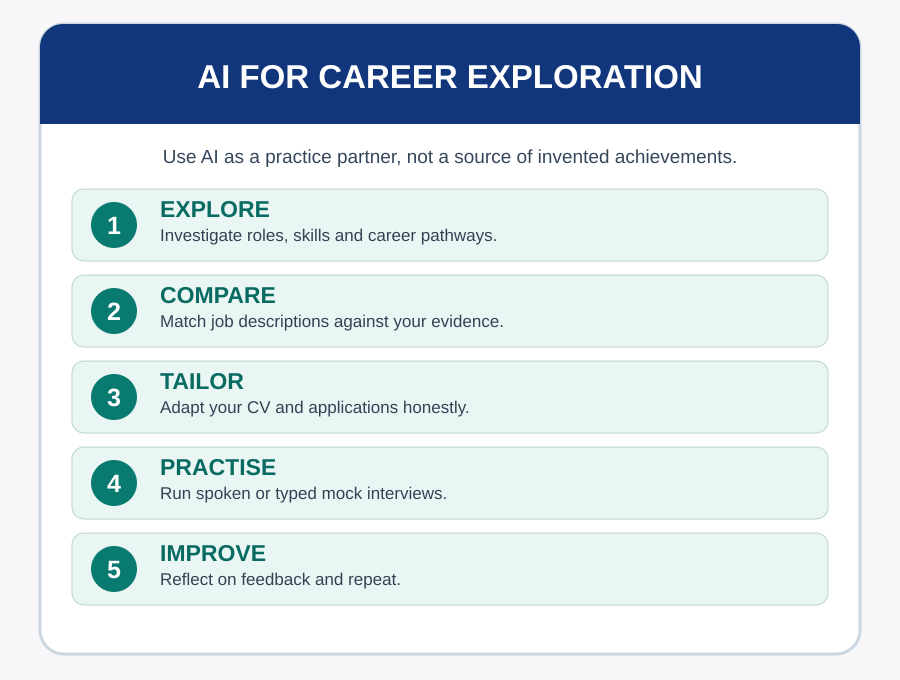
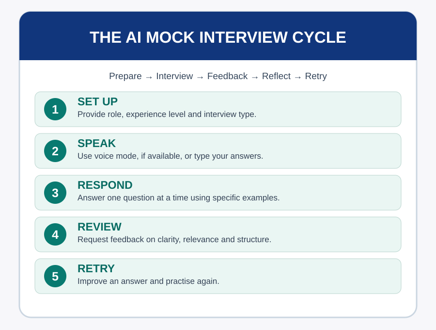

Purpose of Session
This session shows you how to use AI as a practical career-development partner. Explore possible career paths, understand how AI can support job applications and CV tailoring, and practise answering interview questions through a realistic mock interview. Use AI to build your own confidence, reflection and communication skills—not to replace your judgement or invent experience.
Learning Outcomes
- Use AI to explore job roles, career pathways and skill requirements.
- Explain how AI can support CV tailoring, cover letters, interview preparation and skills-gap analysis.
- Create a useful prompt for an interview simulation based on a chosen job role.
- Practise a mock interview using AI voice interaction (where available) or text.
Time allocation: 60 minutes
Activities
- Activity 5.1: Explore a career
- Activity 5.2: Tailor the evidence
- Activity 5.3: Build your interviewer prompt
- Activity 5.4: Run a mock interview
- Activity 5.5: Reflect and improve
What Would You Ask Before an Interview?
Imagine that you have an interview next week for a role you are interested in. You know the job title, but are unsure what the employer expects or how to prepare. What would you want to find out first?

Part 1: Career Exploration with AI
AI can help you investigate career options by describing typical tasks, skills, qualifications, working contexts and possible progression routes. Ask it to compare roles, suggest transferable skills and identify topics to investigate further. Treat its responses as starting points: verify entry requirements and job details against current employer adverts, professional bodies and official careers resources.
Useful prompts are specific about your interests, current skills, location and experience level, but avoid sharing unnecessary personal details.
“I enjoy organising projects and analysing information. Compare three entry-level roles where these strengths are relevant. Explain the typical tasks, skills and what I should research before applying.”
Explore a career
Choose a role that interests you. Use AI to understand it, then identify what still needs verification.
Part 2: AI for CVs and Job Applications
AI can compare a job advertisement with a CV to suggest more relevant wording, highlight skills gaps, draft a cover-letter outline and help you prepare questions about the role. It can also explain applicant tracking systems (ATS) and suggest clearer formatting and relevant keywords. No wording or keyword strategy guarantees selection.
Never add experience, certifications, employment dates or achievements you cannot substantiate. Provide a short job description and an anonymised account of your actual experience, then ask AI to identify relevant evidence. Review every suggestion. Remove identifiers and sensitive information before uploading documents, and follow organisational data policies.
Tailor the evidence
Use a fictional or real job advertisement. Rewrite a factual experience statement without exaggeration.
Part 3: Designing an Effective AI Mock Interview
AI can simulate a recruiter or hiring manager and ask competency-based, behavioural, situational and technical questions. Give it the role, experience level, job description, interview style and feedback preferences. Ask it to pose one question at a time, wait for your answer and follow up when an example lacks detail.
For behavioural questions, use the STAR framework: Situation, Task, Action and Result. Strong answers are specific, truthful and relevant. AI feedback is not a reliable prediction of how a real interviewer will score you.
“Act as a supportive interviewer for an entry-level project coordination role. Ask me four realistic interview questions, one at a time. Wait for each answer before continuing. Include at least one behavioural question. When finished, give constructive feedback on relevance, clarity, specific examples and what I could improve. Do not invent experience for me.”
Build your interviewer prompt
Draft a prompt you can use in a suitable AI chat tool.

Part 4: Speaking to AI — Your Mock Interview
Where available, activate your AI assistant’s voice or microphone feature to conduct a spoken, back-and-forth interview. Answer aloud as you would in a real interview, then ask the assistant for feedback on your responses and how they might come across to an interviewer.
Ask for realistic follow-up questions, but avoid relying only on AI-generated scripted answers. Practise explaining your own ideas, listening carefully, structuring answers and recovering when a question is unfamiliar. If voice interaction is unavailable, use text instead.
Run a mock interview
Complete two or three interview questions using voice or text. Try answering at least one question aloud.
Part 5: Feedback, Reflection and Next Steps
After practising, request feedback on the substance and structure of your answers: Did you provide examples, respond to the question and communicate clearly? Compare AI feedback with your own judgement and, where possible, advice from a real mentor or career adviser. Practise again with a revised answer.
Reflect and improve
Choose one answer you gave, identify a change and practise it again.
Practical Checklist and ePortfolio Reflection
Practical Checklist
Reflection — Add to Your Internship ePortfolio
Recommended Readings and References
Campion, M.A., Palmer, D.K. and Campion, J.E. (1997). A review of structure in the selection interview. Personnel Psychology, 50(3), pp. 655–702.
Latham, G.P., Saari, L.M., Pursell, E.D. and Campion, M.A. (1980). The situational interview. Journal of Applied Psychology, 65(4), pp. 422–427.
International Labour Organization (2023). Generative AI and Jobs: A Global Analysis of Potential Effects on Job Quantity and Quality. ILO Working Paper 96.
Return to Module 6 to choose another session.